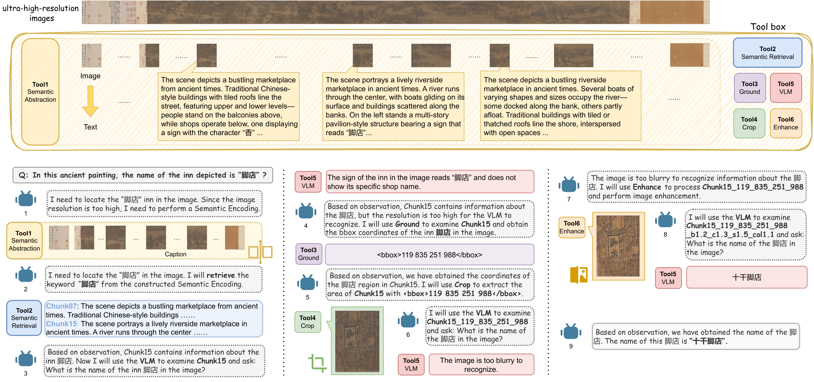
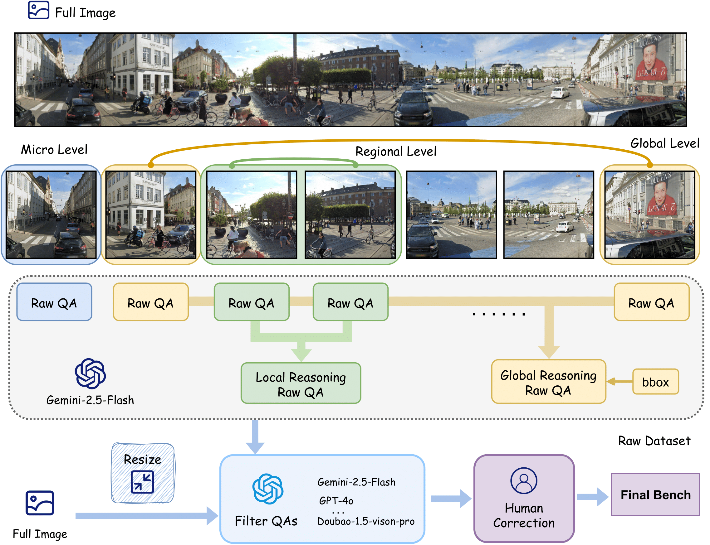
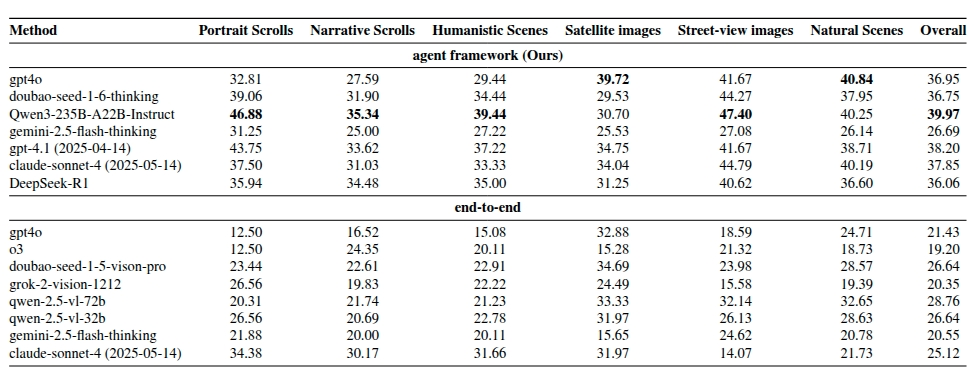
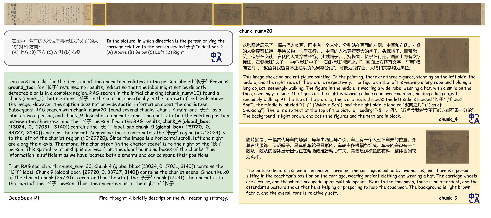

Recent multimodal large language models (MLLMs) show strong capabilities in visual-language reasoning, yet their performance on ultra–high-resolution imagery remains largely unexplored. Existing visual question answering (VQA) benchmarks typically rely on medium-resolution data, offering limited visual complexity. To bridge this gap, we introduce Ultra-high-resolution Reasoning Benchmark (UR-Bench), a benchmark designed to evaluate the reasoning capabilities of MLLMs under extreme visual information. UR-Bench comprises two major categories—Humanistic Scenes and Natural Scenes—covering four subsets of ultra–high-resolution images with distinct spatial structures and data sources. Each subset contains images ranging from hundreds of megapixels to gigapixels, accompanied by questions organized into three levels, enabling evaluation of models’ reasoning capabilities in ultra–high-resolution scenarios.We further propose an agent-based framework in which a language model performs reasoning by invoking external visual tools. In addition, we introduce Semantic Abstraction and Retrieval tools that enable more efficient processing of ultra–high-resolution images.We evaluate state-of-the-art models using both an end-to-end MLLMs and our agent-based framework, demonstrating the effectiveness of our framework.
We introduce UR-Bench, a benchmark for ultra–high-resolution multi-hop reasoning, where individual image files range from several megabytes to over 1 GB and exhibit high information density. The benchmark incorporates three levels of reasoning complexity, enabling fine-grained evaluation under extreme visual conditions.
We propose an agent-based framework that enables LLMs to autonomously plan and coordinate tool-based operations. The framework emphasizes semantic decomposition of ultra-large-scale visual information through the Semantic Abstraction and Retrieval Tool, enabling efficient perception and reasoning over ultra–high-resolution images.

We propose an automated data engine for generating multi-hop reasoning questions over ultra–high-resolution images, capable of automatically producing questions with varying levels of reasoning difficulty.


